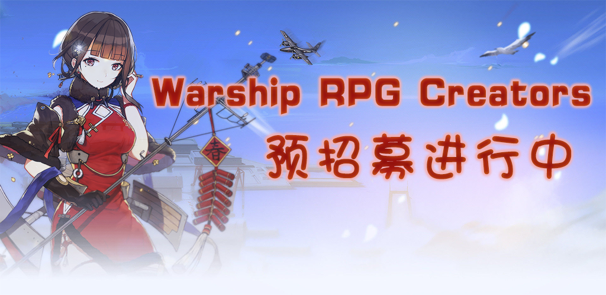
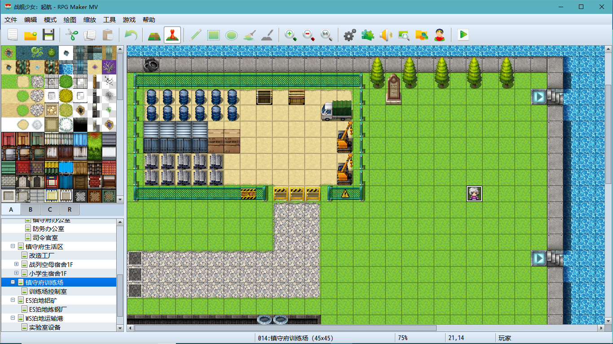
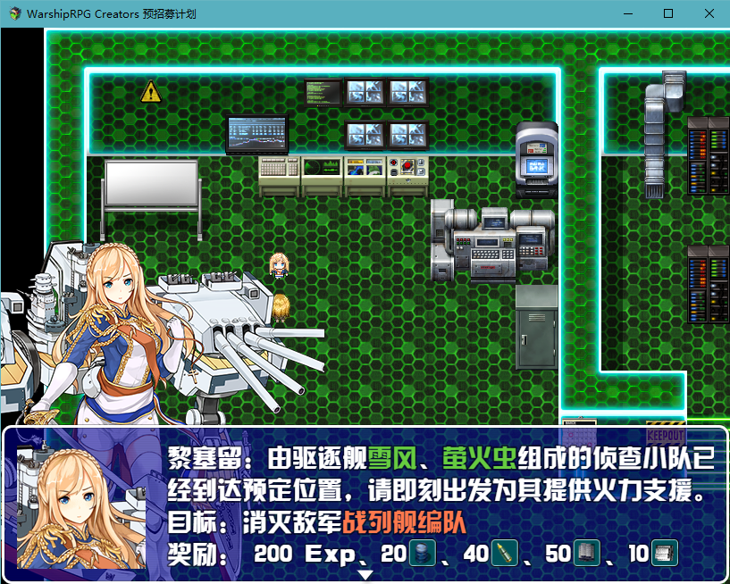
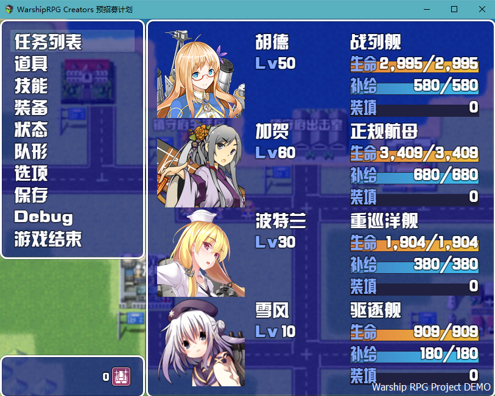
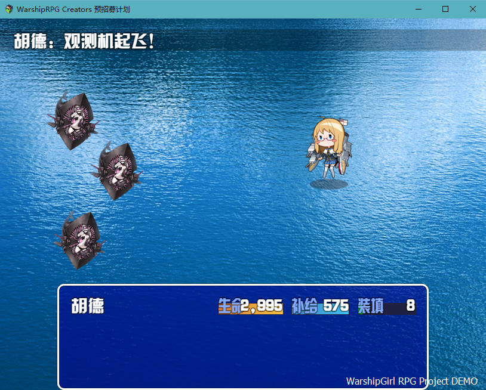

Toggle navigation
Warship RPG Creators
游戏简介
制作计划
制作组分工
工作介绍
报名方式
关于本站
联系我
邮箱：1642333289@qq.com
QQ:1642333289
报名的话直接发邮件到我邮箱里就OK

游戏简介
关于此游戏进一步详细的介绍，你可以查看
[WarshipGirl RPG Project]
《WarshipGirl RPG Project》是以海军军舰拟人化为题材的RPG游戏系列（[注] Role-playing game，在游戏中玩家负责扮演角色在一个虚构世界中活动），游戏依托于已经发行的收藏类游戏《
战舰少女R
》进行开发，使用《战舰少女R》的人物设定和原画材料，但在游戏方式和内容上与其不同，属于同人游戏。

游戏将采用较为简单的角色扮演游戏开发工具：RPG Maker MV，风格为仿传统日系RPG风格，玩家可以通过操作角色完成对港区的游览、队伍编制、装备开发、技能搭配和出海作战等操作，在游戏中体验剧情的发展和角色的成长。
《WarshipGirl RPG Project》将分为四个部分来制作，即将投入制作的是游戏的第一部分：《战舰少女：启航》，在剧情线上属于故事的开始，讲述了玩家阵营从小型舰队开始，逐渐建立起一支有实力的舰队，共同对抗来自深海敌舰的故事。



与原作《战舰少女R》相比，作为RPG游戏的《WarshipGirl RPG Project》更强调游戏的可操作性和剧情体验， 这也意味着要为其赋予新的系统。《WarshipGirl RPG Project》为开发者提供了角色、职业、技能、道具、 任务等多层次的设计方案，而如何实现这些设计，还要靠制作组之后的工作。
制作计划
制作组分工
工作介绍
报名方式
WarshipGirl RPG Project
Copyright © 2018 · All Rights Reserved ·
Warship RPG Creators